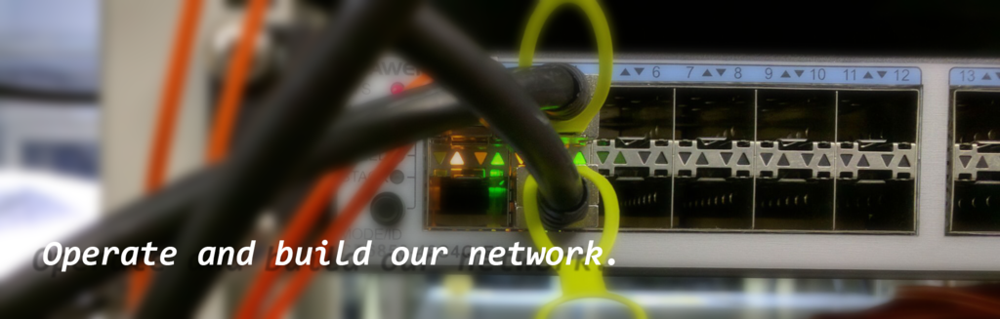

rgrootについて
rgroot研究グループは慶應義塾大学湘南藤沢キャンパス徳田・村井合同研究プロジェクト内における研究グループのひとつです。研究室ネットワークの運用、ネットワーク技術に関する論文の輪講、各自の研究の推進といった具合に、情報通信技術に関する研究と実ネットワークの運用の両輪で研究活動を行っています。
研究トピック
主な研究トピックとして次のような項目が挙げられますが、必ずしもこれらに限定されることはありません。各自が柔軟にテーマを設定して取り組んでいます。
- 高速インターネットアーキテクチャ (ラベルスイッチ技術, コンテンツデリバリネットワーク技術)
- 次世代インターネット基盤技術 (ルーティング, IPv6, モバイルインターネット, マルチキャスト, DNS)
- IoT向け無線通信技術 (LPWA, LoRaWAN)
メンバー
教員
- 植原 啓介 (kei, 環境情報学部 准教授)
- 鈴木 茂哉 (shigeya, 政策・メディア研究科 特任准教授)
-->
学生
- Andrey Ferriyan (andrey, 政策・メディア研究科 D3)
- 鈴木 恒平 (jingle, 政策・メディア研究科 M2)
- 小林 茉莉子 (ao, 政策・メディア研究科 M2)
- Flo Costa (flo, 政策・メディア研究科 M2)
- 豊田 安信 (yas-nyan, 政策・メディア研究科 M1)
- ルーク コリー (koluke, 政策・メディア研究科 M1)
- 郭 宜来 (guo, 環境情報学部 B4)
- 栗原 祐二 (syaro, 環境情報学部 B3)
- 坂上 湧理 (yuuri, 環境情報学部 B3)
- 深川 祐太 (skyline, 環境情報学部 B3)
- スズキ ブラッドリー (burachan, 環境情報学部 B3)
- 村田 佳都 (yoshim, 環境情報学部 B3)
- 周 南一 (nighy, 環境情報学部 B2)
OB
2016年度卒業
連絡先
rgrootの活動についてご質問のある方は、 rgroot＠sfc.wide.ad.jp までメールをください。
関連リンク